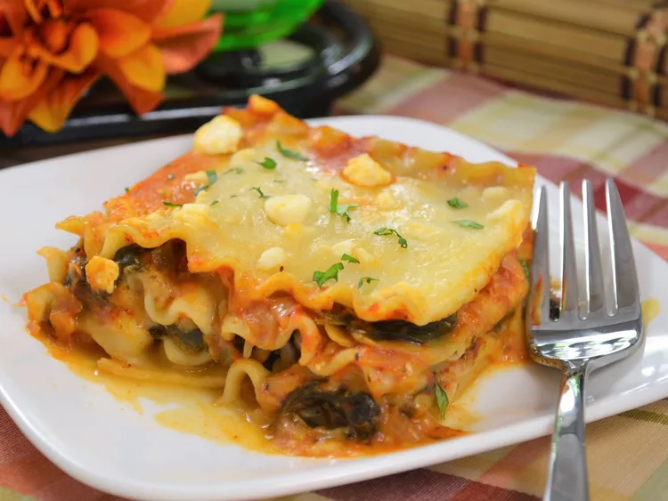

Lasagne

Artichoke Spinach Lasagna
Artichokes make this dish taste meaty, but also
make it extra healthy. "This was the best lasagna ever!" says J.
Van Liere. "I made it exactly like the recipe said and it was
perfect -- don't change a thing. You have to try it!"
Ingredients
- 9 uncooked lasagne noodles
- 1 onion, chopped
- 4 garlic, chopped
- 1 can vegetable broth
- 1 tablespoon chopped fresh rosemary
- 1 can marinated artichoke hearts, drained and chopped
- 1 package frozen chopped spinach, thawed, drained and squeezed dry
- 1 jar tomato pasta sauce
- 3 cups shredded mozzerella cheese, divided
- 1 package herb and garlic feta, crumbled